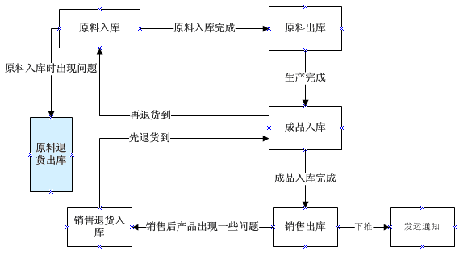
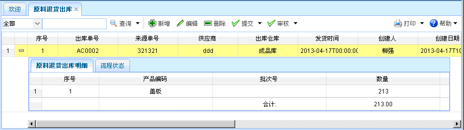
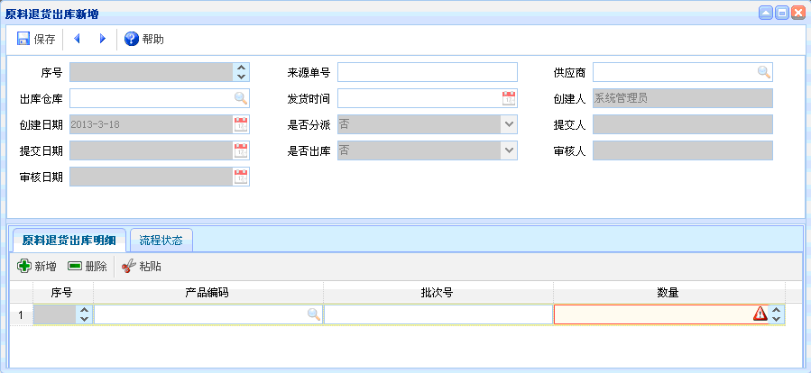
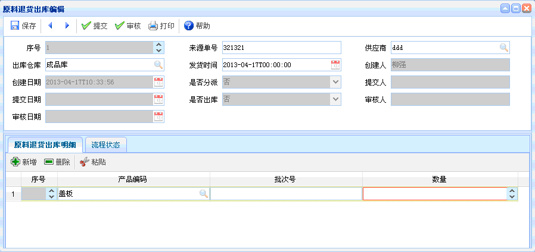

原料退货出库
原料退货出库
一、概述：原料退货出库，采购的原料出现一些原因需要退货，进行的相关操作。
二、流程图演示：如下图所示。

图表【流程图】
图表【流程图】
三、功能介绍：点击【原料退货出库】，进入原料退货出库页面，还可查看原料出库明细和流程状态。 如下图所示。功能主要包括：查询、新增、编辑、删除、提交、审核。

图表4-10-1【原料退货出库】
图表4-10-1【原料退货出库】
【查询】：通过设置查询条件，直接点击查询按钮即可列出符合条件的相关信息。
【新增】：点击新增按钮，如下图所示。新增完毕，点击保存。新增时，红色文本框为必填项，灰色文本框为默认，有搜索图案的字段要进行查询。可对出库单明细进行新增、删除、粘贴操作，并可查看流程状态。

图表4-10-2【原料退货出库新增】
图表4-10-2【原料退货出库新增】
【编辑】：选中某项原料出库信息，点击编辑按钮后，出现如下图所示内容。进行编辑，提交操作。编辑时，红色文本框为必填项，灰色文本框为默认，有搜索图案的字段要进行查询，对原料出库明细进行新增、删除、粘贴操作，并可以查看流程状态。

图表4-10-3【编辑】
图表4-10-3【编辑】
【删除】：选中某项原料退货出库信息后，点击删除，已提交的不能删除。
【提交】：选中某项原料退货出库信息后，点击提交，已提交的数据不能再次提交。
【审核】：选中某项原料退货出库信息后，点击审核，即可审核该信息。未提交的不能审核。
 注意事项
注意事项
1、提交后不能再次进行编辑，如果需要进行编辑，提交人需撤消提交之后，才能再次进行编辑。
2、审核之前，单据要处于提交状态，审核后想驳回审核，由审核人进行驳回。
 常见问题
常见问题
1、？
2、？
3、？